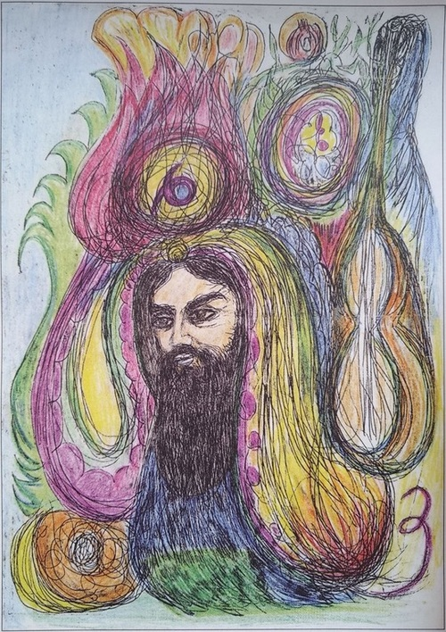
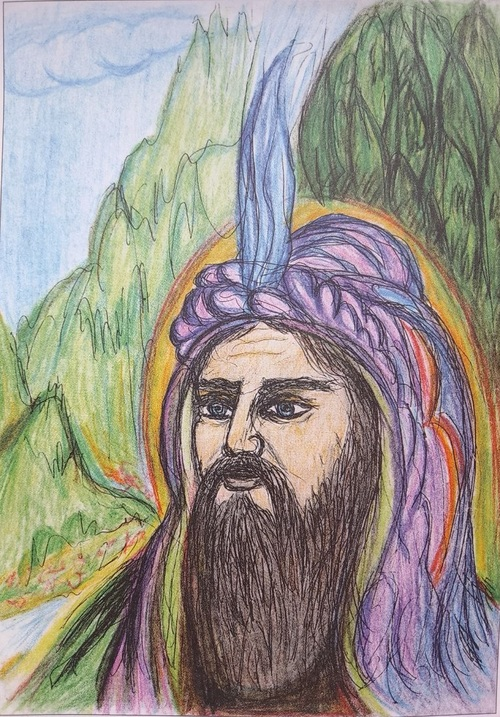
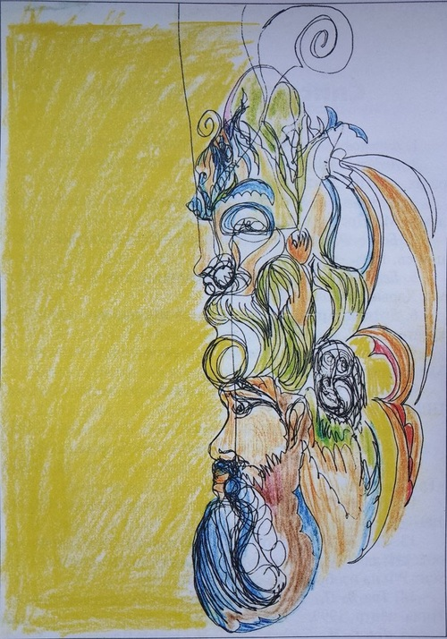

ДЕДЕ ГОРГУТ – ИСТОРИЧЕСКАЯ ЛИЧНОСТЬ
Альтернативная психология может лучше охарактеризовать
национальные особенности в творчестве людей, лучше познакомить
народы мира друг с другом, показать их схожие черты, доказывая, что
человечество пьет воду из одного источника. Создатель фактически
сообщает об информационном источнике природы каждой нации.
Альтернативная психология учится на продуктах творческой энергии,
которую несет каждый народ, показывает свой уникальный
альтернативный подход в рамках современных наук и создает условия
для проведения новых исследований в русле интеграции. Методы
Альтернативной психологии способствуют культурно-
этнографическим исследованиям, помогая получать образы предков и
сведения об исторических личностях. Так Метод Фазовых Портрет-
систем сыграл особую роль в выяснении многих фактов о нашей
национальной культуре. В качестве примера можно привести 3
фазовых портрета-систем Деде-Горгута, полученных в дни
празднования 1300-летнего юбилея «Китаби Деде-Горгута». Получение
этих сведений очень значимо как первое событие в исторической
памяти всех народов, в том числе и азербайджанского.

Сведения, полученные на фазовых портретах Деде-Горгута,
очень разнообразны и интересны. Детали рисунков раскрываются
следующим образом: с правой стороны на рисунке изображена луна
(ай) и хлеб ( чюрек). Если взять первые буквы этих слов и объединить
их, получится слово «ач» ( открой, раскрой). Если же взять первые две
буквы слова «чюрек» и прибавить к ним букву «з», изображенную с
левой стороны, получится слово «чюз» (раскрой). Следовательно, эти
слова сами по себе уже показывают наличие тайного смысла в этих
рисунках и требуют их анализа.
Далее, над образом Деде Горгута на фоне гранатового
цветка,
внутри некоего круглого элемента изображен символический
зодиакальный знак Тельца. В астрономическом смысле это передает
информацию о рождении Деде Горгута под знаком Тельца. С правой
стороны образа снизу вверх количество волн указывает на 5 столетий.
В то же время, изображение цифры «6» и последовательное
изображение второго круглого элемента передает значение цифры «0».
Собрав их в ряд, получаем цифру 560, которая указывает на дату
рождения Деде Горгута.
560-й год — год Дракона по восточному календарю. В
пословице
под номером 74 Дрезденского варианта эпоса Деде Горгута говорится:
«Аб-алджа чикенден ундим, ате белинден ендим, ане бетнине душдим,
мави гезли див кызындан тугдум».
Выражение «... мави гезли див кызындан тугдум» в
переводе
означает: «...возродился от голубоглазой дочери дракона» ( в восточной
мифологии слово «див» чаще всего означало «дракон»). Здесь
выражение «дочь дракона» означает «год дракона»; если повернуть
портрет на 90 градусов по часовой стрелке, то увидим изображение
голубоглазого дракона. На портрете глаз дракона выявляется как знак
созвездия Тельца.
Если раскроем смысл, на который намекает выражение
«голубоглазая», то должны отметить, что в астрологии голубой цвет
относится к месяцам созвездия Тельца — значит, Деде Горгут
выражением «голубоглазая» указал на созвездие именно Тельца и смог
запечатлеть это в памяти и языке истории в форме пословицы.
Выражением «...аб-алжна чикенден ундим», что означает в переводе
«... я снизошел с светло-алого цветка», сообщается о светло-алом
цветке, т. е. о гранатовом, а гранат, как известно, цветет в мае месяце,
который относится к созвездию Тельца. И на первом фазовом портрете
на голове Деде Горгута изображен цветок граната!
Таким образом, Метод фазовых портретов живых систем
дает нам возможность расшифровать информацию, которая
закодирована в пословице самим же Деде Горгутом. На
основании закодированной информации пословицы, смысл
которой раскрывается методом фазовых портретов, мы можем
прйти к выводу, что Деде Горгут родился в 560-м году — в год
Дракона, под созвездием Тельца — в мае месяце.
Дата рождения Горгуда в 560 году подтверждается и
другими
сочетаниями в надписи.
Для приведения еще одного доказательства отметим
нижеследующие факты, выявленные при расшифровке во время
идеационной работы с фазовым портретом Деде Горгута. В двух
местах рисунка изображена белая сова. Прояснилось, что 560-й год —
это также год белой совы по авестийскому календарю, который состоит
из 32-х годичных циклов. Значит, факт рождения Деде Горгута в 560-м
году, выявленный на фазовом портрете, подтверждается обоими
календарями.
Портретно-системный метод Фаза позволяет прочесть
закодированную информацию о себе в пословицах Деда-Горгуда.
Если поставить цифру «8», изображенную на фоне
гранатового
цветка, затем изображение одного лепестка и, последовательно,
изображение цифры «9» внутри солнца, получится число 819, которое
указывает на дату смерти Деде Горгута. То есть мы получаем
расшифровку дат его жизни и смерти: родился в 560-м, а умер в 819-м
году. Значит, он прожил 259 лет.
Таким образом, Деде Горгут прожил 259 лет, а не 295, о
чем
говорит историк XIII-XIV веков Рашидаддин в своем произведении
«Джамаат-тарих». Этот факт был подтвержден Законом о зеркальном
отражении палиндромных чисел. Согласно этому закону, правильно
найденное число при суммировании его цифр с его же цифрами, но
записанными в обратном порядке, в конечном итоге дает число
симметричное. И если установить зеркало в середине этого числа, то
цифры слева и справа воображаемого зеркала будут представлять
собой зеркальное отображение друг друга. Когда мы проверяем возраст
Деде Горгута по этому закону, мы получаем следующий ряд действий:
259+952=1211; 1211+1121=2332. А 23 — зеркальное отражение числа
32. Значит, возраст Дада Горгута, найденный по фазовому портрету,
получил свое подтверждение по этому закону. Одним из важных
фактов стало то, что на фазовых портретах есть образ граната, который
является символом пожелания Деде Горгута на будущее тюркским
народам.
Воля Деде Горгута: «Пусть тюркские народы объединятся
как гранат!
Пусть сохранятся, как зерна в гранате!»

